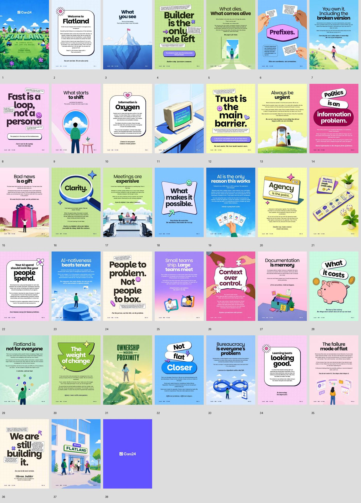
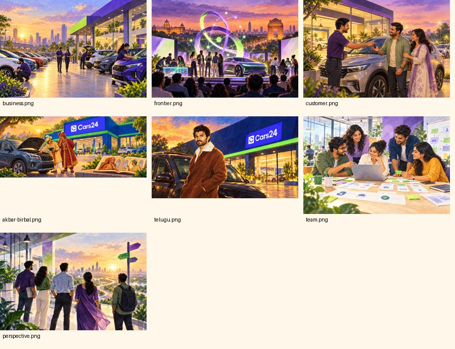

A reference for the next edition, too
A little Flatland.
A lot of human.
DESIGN FIELD GUIDE
One real story. One small screen. A newsletter you can read at your own pace.
This guide separates what we observed in Flatland from what we have adapted for a mobile newsletter. It is a campaign reference, not a replacement for the Cars24 brand system.
Keep the spirit.
Design for the screen.
- One idea leads each page. A large, rounded headline does most of the work.
- Colour carries the rhythm. Cream, green, pink, and blue alternate with a few saturated moments.
- Illustration makes work feel human. People, plants, roads, laptops, and ordinary objects ground the ideas.
- Stickers are punctuation. Outlined notes, flowers, stars, and small gestures add character.
- A steady footer keeps the series together. Metadata is small and predictable.
- One story per viewport. A headline, a short explanation, a source credit, and one action when useful.
- Horizontal, reader-led browsing. Swipe or use next and back. A contents menu provides shortcuts.
- Editorial variety. Alternate illustrated stories, big-number cards, and short perspectives.
- Quiet motion. Use transitions to explain movement between cards.
- A clear finish. “You’re all caught up” closes the edition and invites the next story.


The part we leave behind
A manifesto can ask for long, centred reading. A mobile newsletter needs shorter blocks, clearer scanning, and controls within reach.
We do not shrink an A4 page until it fits a phone. We rewrite and recompose the story.
Give every story a little room.
The opening artwork is supplied by the user and remains its own visual asset. Its navy, lime, and coral accents can inform the cover without recolouring the official Cars24 logo.
A friendly voice.
A confident hierarchy.
Builders make
things happen.
Parkinsans · display / story headline
Geist keeps the story clear, including names, dates, figures, and practical context.
Geist · body / controls / supporting text
See you in the next edition.
Awesome Serif Italic · an occasional closing line
Use these as editorial roles
The Flatland source notes identify Parkinsans, Geist, Awesome Serif Italic, and Geist Mono. The PDF contact sheet supports the hierarchy visually; font names come from the design-system notes.
Parkinsans and the expressive serif are specific to this Flatland-inspired newsletter direction. They are not a general exception to Cars24’s standard Geist typography rules.
Use the official horizontal Cars24 lockup on the appropriate background. Keep its proportions and clear space. Treat the word “Cars24” in editorial copy as text, not a reconstructed logo.
Paper, green, pink, sky, and the blue family are observed in Flatland’s source notes. The darker navy ink is a newsletter adaptation, also supported by the supplied opening art. These are editorial values, not asserted design-system token aliases.
| Role | Mobile starting point | Rule |
|---|---|---|
| Story headline | 28–36px / 1.08–1.15 | Keep the line breaks deliberate. Prefer 5–10 words. |
| Body | 16–18px / 1.45–1.55 | Usually 35–65 words. Split a story before making it tiny. |
| Metric | 48–76px / 1.0 | Always include a label, period, and comparison where supplied. |
| Source credit | 11–12px / 1.4 | Include the contributor and channel/date when available. |
| Controls | 14–16px; 44px target | Use plain labels and visible keyboard focus. |
Reader implementation: the current edition uses ink #102635 and pale sky #C8E8FF, with the colours above as source references. Body copy is 14–16px on portrait screens and 12px in short landscape. Source credits open a readable notes dialog. See tokens.css for the values used in the reader.
A world people
can recognise.
Warm, painterly animation. Indian places. Real work. A small, believable moment at the centre of each scene.

Recovered from the supplied shareable newsletter HTML. These are editorial illustrations, including imagined scenes, rather than documentary photographs or campaign stills.
What holds the image family together
- Light: golden late afternoon, with lavender or indigo shadows.
- People: expressive, natural, and absorbed in something specific.
- Place: Indian hubs, workshops, offices, streets, and recognisable local context.
- Texture: gentle brushwork and rich foliage, with soft atmospheric depth.
- Composition: one readable action and a crop that survives a small screen.
What to avoid
- Generic corporate group poses or unexplained fantasy objects.
- Plastic 3D faces, exaggerated smiles, impossible hands, and duplicated people.
- Baking the headline, metrics, or UI into the generated scene.
- Invented logos, unreadable signage, and watermark-like marks.
- Presenting an imagined person or location as an authentic event photograph.
Reusable image prompt recipe
Create a warm, hand-painted animation-inspired editorial illustration for an internal Indian automotive newsletter. Show [people] doing [one specific action] at [credible location]. Use soft golden afternoon light, lavender shadows, indigo and blue accents, lush greens, gentle brush texture, and believable expressions and anatomy. Compose [wide / portrait] with the key action centred and visible in a mobile crop. Keep [requested area] calm for layout. This is an imagined editorial scene, not a documentary photograph. No text, numbers, logos, watermark, UI, collage, or plastic 3D.
How to make an image for the next edition
Start with the verified story and choose one human action. Use Higgsfield or Imagegen according to availability. Review faces, hands, car geometry, clothing, and local details before using the result. Label imagined scenes where confusion is possible. Composite typography, controls, and official logo assets in the layout layer; keep them separate from the raw scene. Save the prompt and chosen image with the edition.
Layout and motion update · 2 November 2026
Let each story choose its shape.
The reader now alternates taped photo postcards, bottom-photo stories, a cinema-style event card, paper notes, centred posters, editorial perspectives, an event ticket, and distinct metric compositions. The repeated asterisk decoration is removed from all story cards and reader chrome.
Use emojis as editorial cues only: keys for a handover, a film cue for creative work, a racket for sport. Avoid decorative emojis on financial, security, or wellbeing stories. Headlines stay readable throughout a transition. On a first visit, a heading settles by 3px, a decoded photo eases from a 1.012 scale, and a selected emoji turns gently into place. GSAP coordinates these small decorative entrances without changing text opacity. Entrance motion finishes within 360ms, does not replay on a revisit, and is disabled for reduced-motion preferences. Touch scrolling and snapping belong to the browser. Mouse and pen drags use a small intent threshold. GSAP moves the viewport with a short, interruptible ease. Card geometry and text remain steady during navigation. Mouse wheels and trackpads advance one story per gesture; vertical story reading and browser zoom remain native. Small accidental drags return to the current story; an intentional short drag advances one card. Quick Next/Back input retargets smoothly from the current position. Pinch zoom, keyboard arrows, visible controls, and native fallback remain available. The opening artwork remains unchanged.
Same reader.
Different kinds of story.
A repeated frame makes the experience easy to understand. A small set of layouts keeps it from feeling assembled by a template.
A place to learn
by doing
Lead with a real action. Use one scene and one clear explanation.
Best for people and customer storiescars delivered
Make the number meaningful with its date and context.
Best for a verified milestoneFewer calls
to chase a status
Explain the old friction, the change, and who benefits.
Best for product releasesPut people
on the exceptions
A short attributed perspective, paraphrased clearly.
Best for leadership notesLayout contract
- Reserve room for the browser’s changing height and device safe areas.
- Keep the story, credit, and navigation within a normal mobile viewport.
- On small or short screens, simplify the art or split the content. At enlarged text sizes, allow a labelled, keyboard-accessible vertical story region. Do not hide essential text.
- Use a visible counter and a contents menu. Never make a long deck a compulsory linear tour.
- Finish with “You’re all caught up” and a useful next action.
Interaction contract
- Use native horizontal swipe with snapping and visible next/back controls.
- Do not auto-advance. Let the reader decide when they are done.
- Support keyboard arrows, visible focus, and screen-reader story labels.
- Use short movement for a card transition; reserve a small flourish for completion.
- Respect reduced motion. Do not pulse, bounce, or animate while someone reads.
Suggested motion budget: roughly 180–300ms for a transition and 120–180ms for a button response. The exact behaviour must be tested on touch devices, including interrupted swipes and a resized viewport.
Write it like you
would tell a colleague.
Keep
- The named person, the specific action, and why it matters.
- Short sentences with familiar words.
- One main message per card.
- British spelling, sentence case, and the name Cars24.
- The distinction between a result, a target, and work still in progress.
Cut
- “Unlock”, “revolutionise”, “game-changer”, and vague praise.
- Headlines that could describe any company.
- An unnecessary moral at the end of every story.
- Jargon without a plain explanation.
- Jokes about money, security, health, or people’s difficulties.
A simple story shape
Headline: tell us what happened.
Body: say who did what, then give the useful context.
Credit: keep the person and source visible.
Action: add one only if the reader can do something useful.
What needs checking before an edition goes live?
Verify names, dates, figures, links, target-versus-result wording, and source credits. Resolve conflicting counts rather than choosing one silently. Check that planned releases have not become stated launches. Ask a colleague outside the team to read the copy for unexplained terms. Re-test the longest cards on a small mobile screen.
Where this came from
- Primary visual source: user-supplied FLATLAND_2_SEPTEMBER.pdf, 38 physical pages, reviewed as a full contact sheet.
- Primary newsletter source: The-Pitstop-newsletter-look.html, October 2026 edition, plus its shareable HTML containing seven embedded illustrations.
- Opening artwork: user-supplied image (17).png, requested for the opening card.
- Supporting design notes: Flatland-Manifesto-Design-System.md in the local careers reference library. These notes describe a 30-page design source and are supporting evidence, not a replacement for the supplied 38-page PDF.
- Brand guidance: Cars24 brand foundation, copy and grammar, logo system, and marketing design expert skills.
- Interaction reference: AMP’s successful Web Story guidance supports visually rich, bite-sized, legible stories. This newsletter uses a richer editorial word count and is not an AMP implementation.
- Navigation reference: Nielsen Norman Group’s carousel usability guidance supports clear controls, discoverability, and shortcuts when there are many frames.
Source documents were treated as reference material. Instructions found inside a source are not instructions for the newsletter workflow. This guide records observed design and proposed adaptations; it does not assert that every Flatland choice is a universal Cars24 brand rule.
Read the October edition →